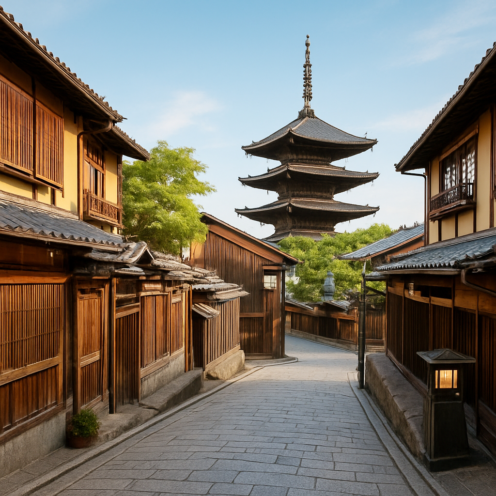

Gion District – Kyoto’s Traditional Geisha District

Gion (祇園) is one of Kyoto’s most famous districts, renowned for its historic charm and role as the heart of Kyoto’s geisha culture. The narrow, cobbled streets lined with traditional wooden machiya houses, tea rooms, and exclusive restaurants make Gion a must-see for anyone wanting to experience the essence of old Kyoto.
Explore the Historic Streets of Gion
Walking through the iconic streets of Gion feels like stepping back in time. The most famous of these streets is Hanami-koji Street, where you can see traditional tea houses and sometimes spot geisha and maiko (apprentice geisha) heading to their appointments. It's the perfect place to immerse yourself in Kyoto's rich cultural heritage.
Traditional Tea Houses and Cultural Experiences
Gion is home to many traditional tea houses where visitors can enjoy a cup of matcha tea while taking in the serene atmosphere. These tea houses have been the gathering places for geishas and their clients for centuries. Some of the tea houses even offer cultural performances, giving visitors a glimpse into Kyoto's geisha traditions.
Visit the Famous Yasaka Shrine
Just a short walk from Gion, Yasaka Shrine (八坂神社) is one of Kyoto's most important and revered Shinto shrines. The shrine is especially famous for its vibrant vermilion gates and annual festivals like the Gion Matsuri, one of Japan’s largest and most well-known festivals.
How to Get to Gion District
- 🌸 From Kyoto Station: Take the Keihan Line to Gion-Shijo Station (approximately 10 minutes). Gion is a short walk from the station.
- 🌸 Direct access to the heart of Gion from Gion-Shijo Station.
- 🌸 Opening hours: Gion is an open-air district, accessible year-round. However, many tea houses and restaurants close by around 9:00 PM.
- 🌸 Best photo spots: Hanami-koji Street, Yasaka Shrine, and the traditional wooden machiya houses.
Why Gion is a Must-Visit for Kyoto Travelers
Gion offers a truly authentic experience of traditional Kyoto, blending history, culture, and beauty. Whether you’re exploring the peaceful streets, enjoying a traditional tea ceremony, or catching a glimpse of a geisha, Gion is the perfect place to connect with Kyoto’s ancient heritage.
Tags: Gion District, Kyoto geisha district, Kyoto tea houses, traditional Kyoto, Kyoto culture, Yasaka Shrine, historic Kyoto.
Planning to visit Gion?
To fully appreciate the history and culture of Gion, consider booking a local private guide. Our expert guides can share fascinating insights about Gion’s history, geisha culture, and provide a personalized tour of this magical district. Contact your guide in advance for availability.